Kako pripremiti kompjuter za polaganje ispita/kolokvijuma ?
Windows 10
Usled korona virusa smo u obavezi da radimo svaku vrstu testova od kuće. Naime na pamet vam padne odlično, gde ćeš bolje, odmah googlm odgovre. Stvar je malo komplikovanija, uveli su nove promene u Mtutor platformu preko koje radimo testove. U nastavku teksta ću vam dati sve savete kako da pripremite računar za polaganje.
Moja preporuka je da ukoliko imate nameru da koristite pomoć dok radite test da za to obezbedite odvojeni uređaj. Kameru nemojte priključicati na računar iako to profesori preporučuju, nije razlog varanje već mogućnost da vam u toku aktivnog testa izađe obaveštenje da dozvolite pristup kameri, a samim tim gubite fokus prozora i prikazaće da ste varali !
Prva stvar koju bih ja izmenio su podešavanja Windows 10 sistema, pa da počnemo:
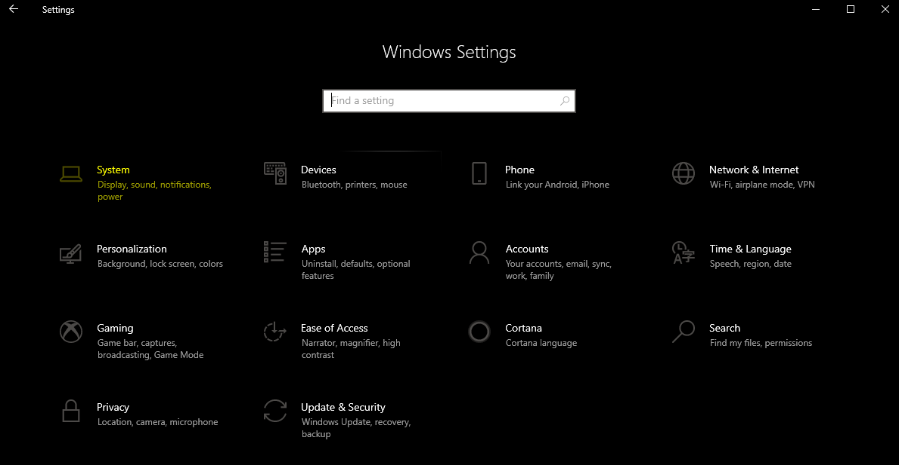Otvorite podešavanja sistema iz windows start menu-a, idite na System settings. Pratite sve naredne slike i podesite sva podešavanja koja su obežena žutom bojom isto kao kod sebe !
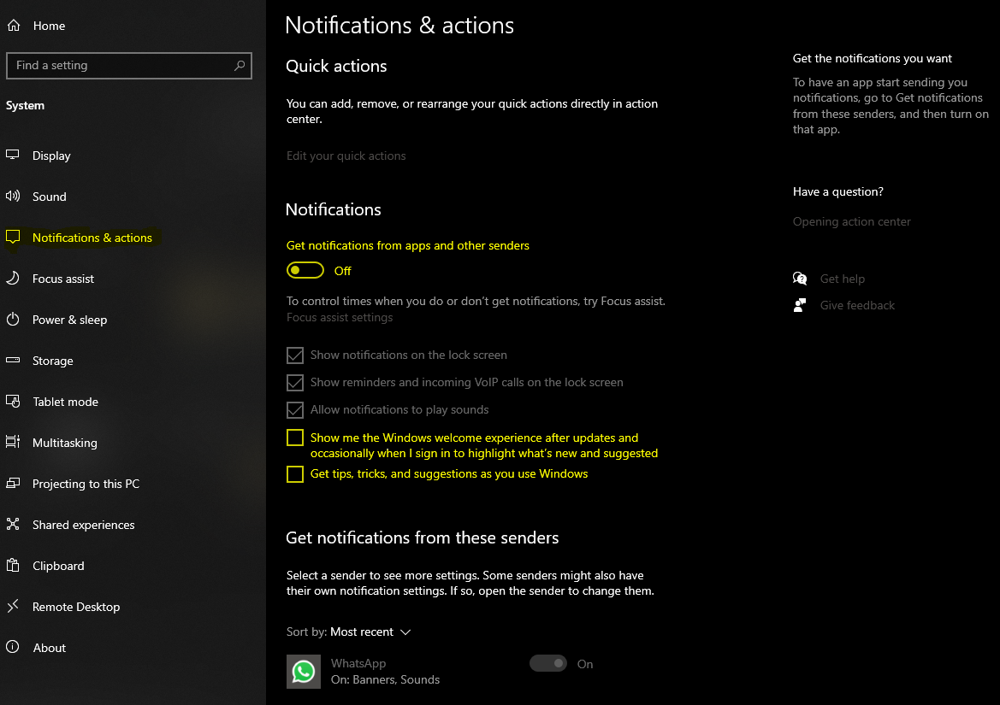
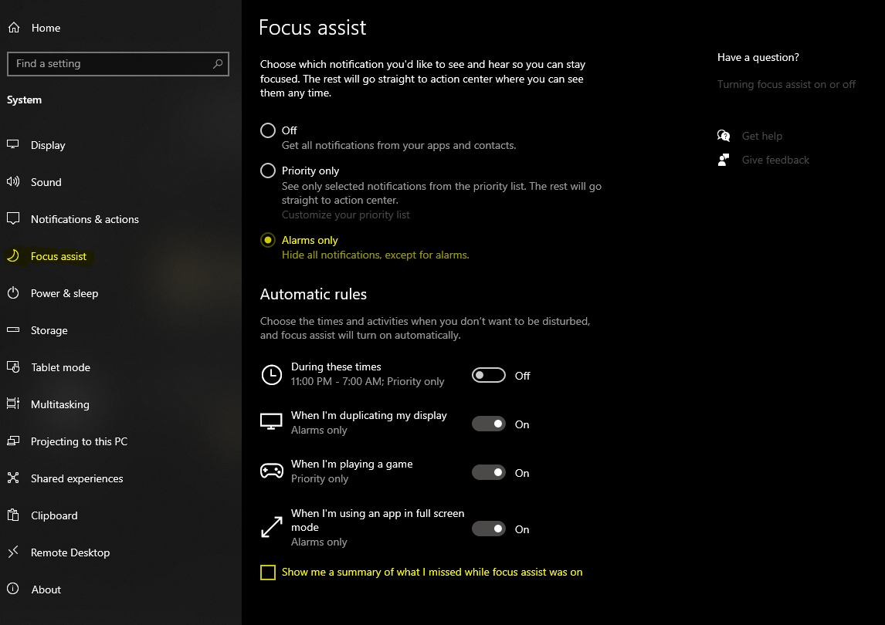
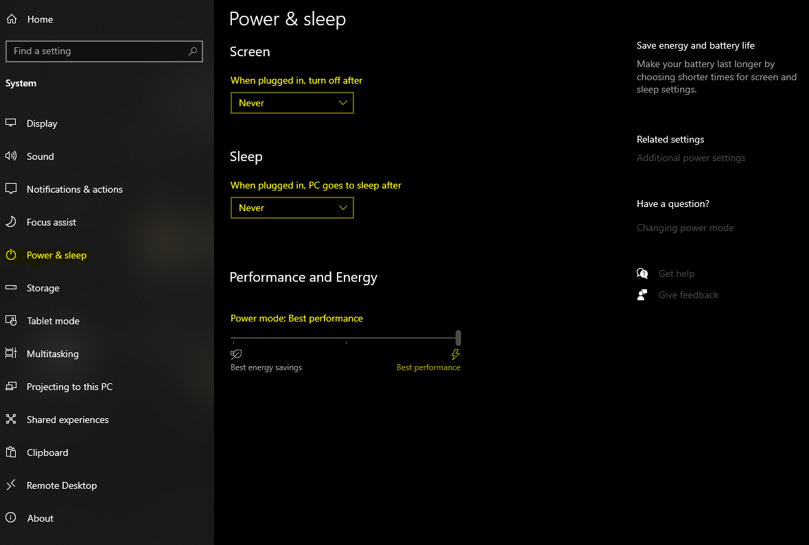
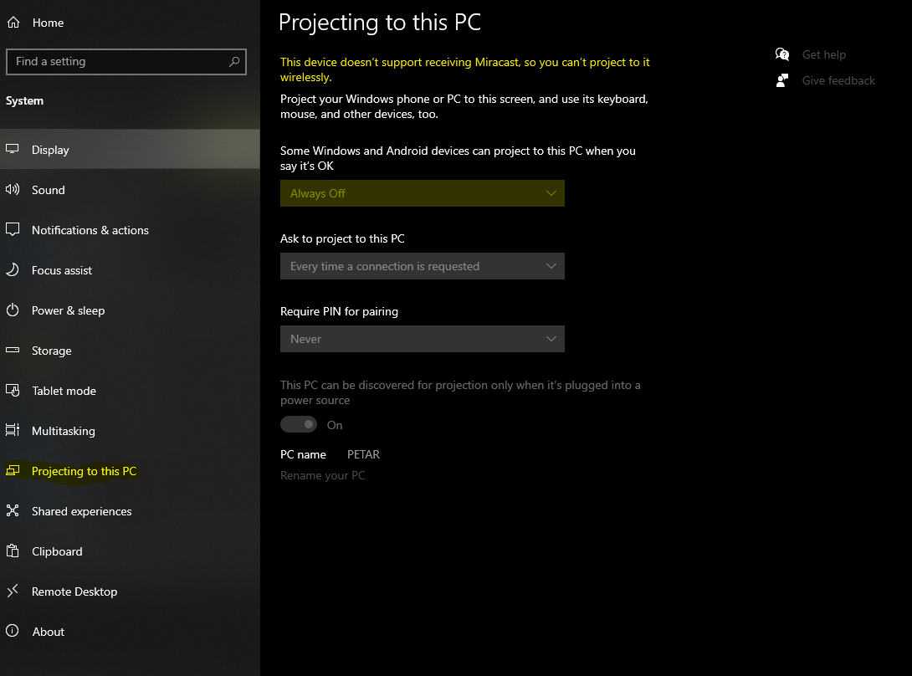
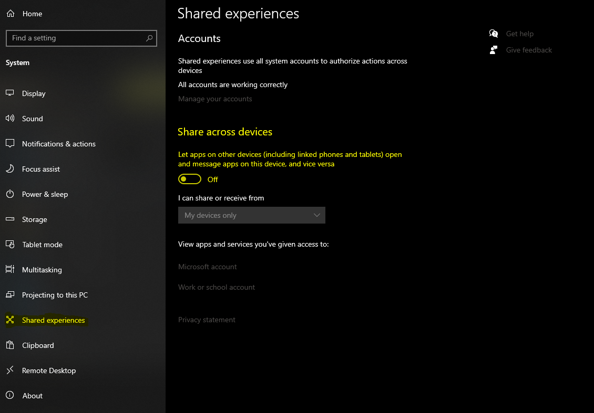

Sada prelazimo na podešavanja Windows update-a, čuvenog porblema Windows 10 operativnog sistema. Da bi smo se osigurali od njegovog pokretanja, obaveštenja ili pak instalacije update-a tokom testa najsigurnije je da ga isključimo ! Naravno kao i malopre pratite slike i podesite podešavanja u žutoj boji na svom računaru.
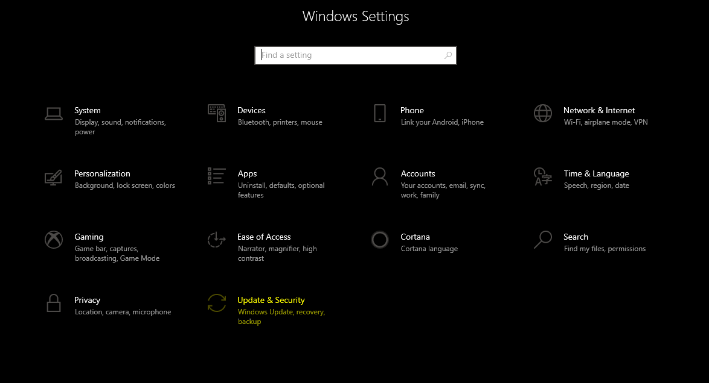 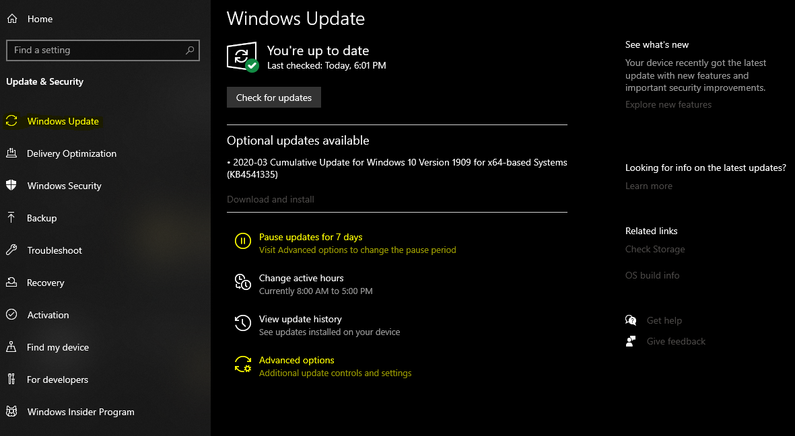 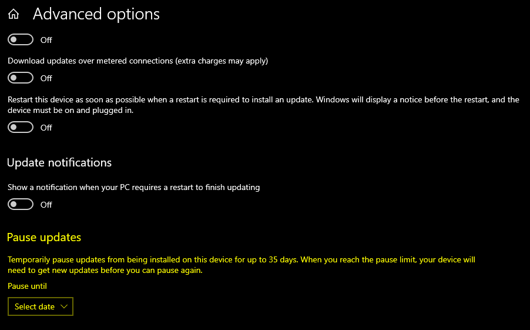
Na padajućem meniju možete odavrati do kada ne želite da primate updejte, moja preporuka je da tu stavite datum dana posle vašeg poslednjeg ispita/kolokvijuma da se obezedite ukoliko dodje do nekih "problema sa Windows-om" (nakon update-a/instalacije bilo čega Windows 10 često ume da resetuje podeštavanja za updejte...)
Chrome podešavanja
Da biste ugasili sva obaveštenja koja mogu slučajno iskočiti u chrome-u portebno je i njih isključiti iz podešavanja samog chrome-a. Da biste to učinili potrebno je otići na ovu stranicu. Nakon toga kao do sad pratite podešavanja na slikama !
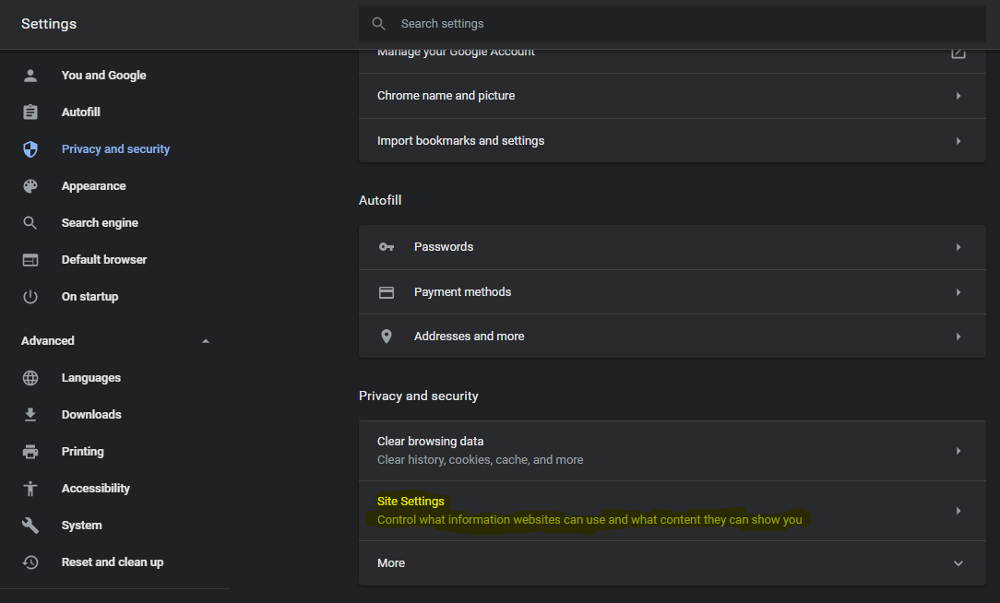 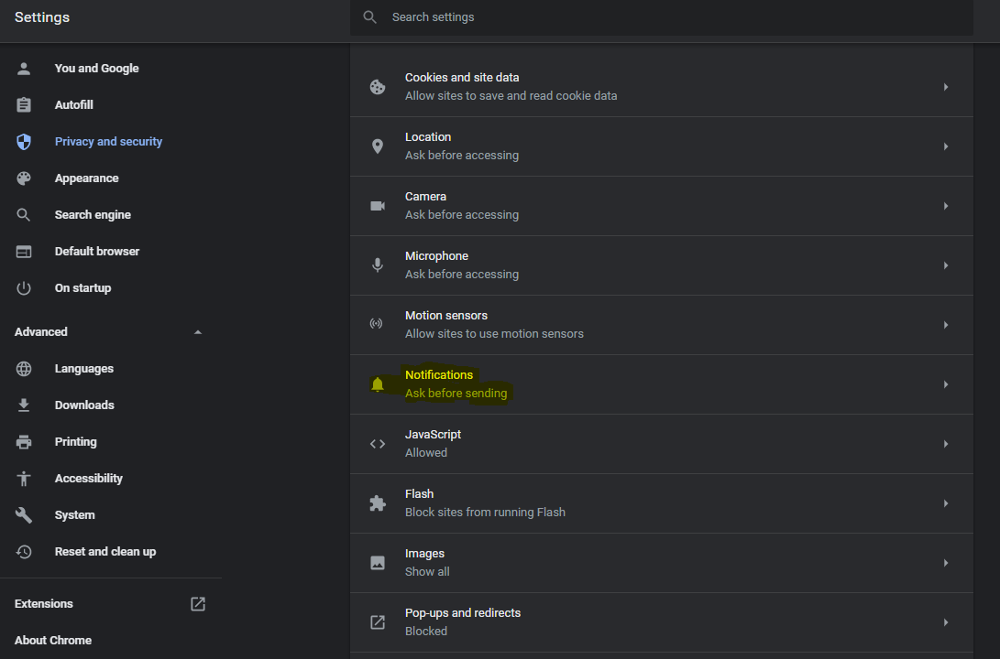Sada uklonite sve sajtove koji imaju dozvolu da prikazuju podešavanja. Nakon toga resetuje Chrome !
Čestitam, upravo ste sve pripremili za kolokvijum !!!
Sada možete bezbedno pristupi MTUTOR (Kumodraška) ili MTUTOR (Danijelova) platformi.
Icons made by Freepik from www.flaticon.com